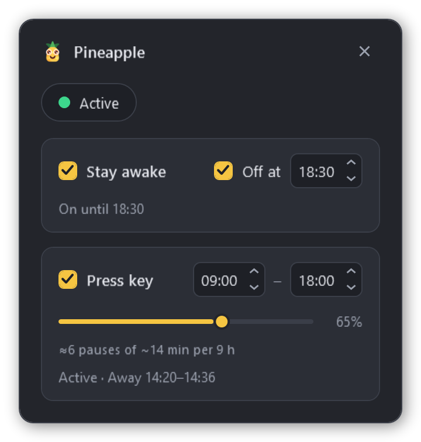
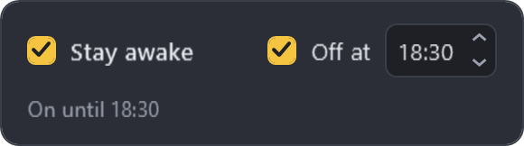
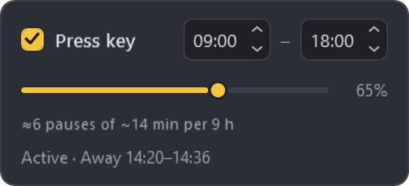
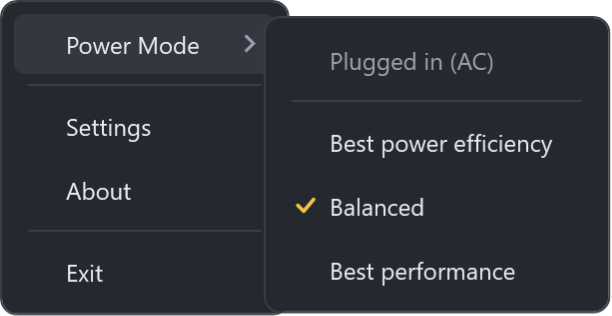
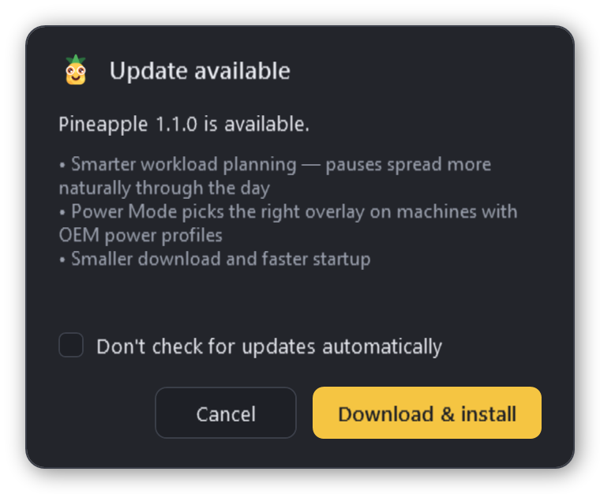

Pineapple
Pineapple
Stay awake.
Look active.
A tiny Windows tray utility that keeps your machine from sleeping, mimics natural activity so you never drop to “away”, and switches Windows Power Mode — all from one icon.
Three things, no clutter
Stay awake
Blocks display and system sleep for as long as you want, with an optional “switch off at” time so it never runs overnight.
Press key
Presses a harmless key at human-like intervals inside your working hours. A workload slider tunes how often it quietly rests and slips to “away”.
Power Mode
Flip between best efficiency, balanced and best performance for the active power source — no admin rights, no registry edits.
Small panel, honest work
Everything lives in one dark panel and a right-click menu. Here is what each piece actually does.



Sleep becomes opt-in
One checkbox tells Windows the machine is in use: the display stays on and the system never dozes off mid-download or mid-build. No mouse-jiggling gadgets, no admin rights — just the official “I’m busy” signal.
Set an Off at time and Pineapple stands down on its own in the evening — the PC goes back to sleeping normally even if you forgot about it.

Presence with a human rhythm
Inside your working hours Pineapple taps SHIFT every 30–90 seconds — harmless anywhere, enough to keep chat status green. The workload slider decides how believable the day looks: lower it and real pauses are scheduled, long enough to genuinely show “away”, so your status breathes instead of glowing green for nine hours straight.
The plan is spelled out in plain words — “≈6 pauses of ~14 min per 9 h” — and the status line speaks Teams: “Active · Away 14:20–14:36”.

The buried Windows switch, unburied
Best power efficiency, Balanced or Best performance — the same Power Mode you’d dig out of Windows Settings, now one right-click away. Pineapple always switches it for whatever feeds the machine right now, mains or battery.
No admin rights, no registry tricks — and if a machine only honors one mode, the submenu simply hides itself.

The icon is the dashboard
One glance at the tray tells you the mode — and a double-click steps to the next one, so the daily on/off never needs a menu.
Takes care of itself
Pineapple starts with Windows (your choice), keeps its settings across updates, and checks the site for new versions. When one appears, it downloads, swaps itself and restarts — one click, done.
